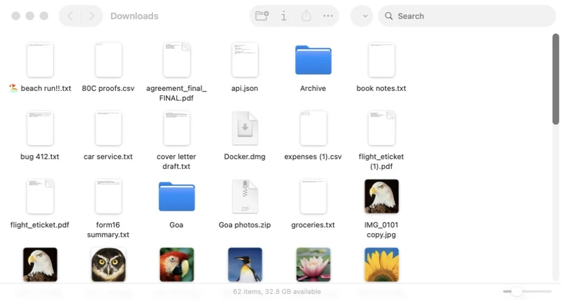

Sheaf reads what is inside your files, sorts them by what they are about, and lets you find anything by person, place, thing or idea, not by file name. It is free, needs no account, and the AI runs on your Mac. You approve every move and can undo all of it.

Screenshots of the beta running on the sample folder of invented files, with local models on a Mac.
How many files, how many collections, and every person, place, thing and idea Sheaf found inside them. Click any name to see every file it appears in.

Ask in your own words, like “rent agreement”. Sheaf matches meaning and exact words together, so names, amounts and invoice numbers work too, and a PDF opens on the page that matched. The collection it lives in shows above the results.

Related files are grouped and named by what they are, never by a person’s name. Sheaf recognises the kind of paper, so a CV stays with CVs, not the certificates it mentions, and a file that only loosely fits is marked rather than forced in. Drag to merge or move; undo is one click.

Each collection becomes a real folder, shown whole with every file and a clearer name. Every move has a checkbox. Nothing happens until you approve, and History puts everything back.

A map of your collections and the files between them. Step into a collection, follow a file to what relates to it, and spot the files that sit in the wrong place.

The small things that make a big folder easy to live with.
“pkg files”, “pdfs from last week about rent”, “screenshots over 5 MB”. Read as filters on the spot, with no model needed.
A PDF result opens on the page that matched, with the words highlighted.
Press a shortcut from any app to search. Space previews, the arrow keys move, Return opens.
Highlight just images, PDFs or installers across Collections and the Graph, or hide the rest.
Every file gets a fit score from how it links to its collection. Weak fits are marked; clear misfits are left out, not forced in.
Keep related papers together, or split them by kind: marksheets, admit cards, ID papers. Switch any time.
Every move is journaled. Collection edits stay in History, and ⌘Z works long after the note has gone.
Quit halfway through reading and Sheaf carries on from there next time. Nothing already done is lost.
Watches your folders and reads only what is new or changed. Collections keep their names as the library grows.
Finds exact copies and large leftovers. Anything removed goes to the Trash, where you can put it back.
While the models download, explore every screen on a folder of invented files. Merge, move and undo for real.
Report a Problem fills in a GitHub issue for you to read and send. Paths are blanked out. There is no telemetry.
More Mac apps now sort files with AI. This is where Sheaf fits, based on public information checked on 21 November 2026.
| Sheaf | Cosmos | VaultSort 3 | AutoShelf | Sparkle | |
|---|---|---|---|---|---|
| Price | Free, no account | Paid, Mac App Store | Paid | Free for one rule, one-time unlock | Subscription after a free trial |
| How it sorts | Groups files by what is inside them and proposes folders | By type, topic or project (beta); file names by default, contents optional | Proposes categories by clustering document text | Rules you write | AI folders from file names |
| Where the AI runs | Open models on your Mac, swappable | On your Mac | On your Mac | No AI sorting | File names sent to a cloud model |
| Search | Meaning, exact words, and people, places and things; opens the matching page | Plain English with editable filters | Semantic search listed as coming next | Not its focus | Not its focus |
| Before files move | You approve a plan; undo all of it | You review; undo any time | Dry-run preview; undo | Acts as soon as a rule matches | Organises automatically |
| Also | Map of connections, fit score for every file, sample folder to try first | Smart Rename (beta) | Duplicate and storage tools | Rename, convert, unarchive | Duplicate removal |
Different jobs: FileOctopus is a Finder replacement whose plain-English search turns fixed phrases into filters, not meaning. Shinybox is a library for links, notes and files you save. Hazel and AutoShelf run rules you write. Pick Sheaf when you have a messy folder, want it sorted by what the files say, want to find things by who, where or what, and want it free with AI that stays on your Mac.
Details of other products change, so check each vendor. Sources: Cosmos on the App Store, VaultSort 3 announcement, AutoShelf on Product Hunt, Every on Sparkle, FileOctopus guide, Shinybox. Product names belong to their owners.
Many AI tools charge a subscription and process your files on their servers. Sheaf needs neither.
No subscription, usage fees, ads or account. Core features will not move behind a paywall.
It runs on the Apple Silicon Mac you already have, with local models.
Nothing is required. A GitHub star, an honest bug report or a note on what grouped badly is how early users help most.
There are no rules to write and no categories to choose. Sheaf works out the structure from what the files say.
Sheaf scans it read-only. Nothing in it is changed, moved or uploaded.
Small local models read text, PDFs, Word documents and text inside images, link files with similar meaning, and name each collection.
Sheaf proposes folders and clearer file names with a reason for each move. Untick what you disagree with, apply the rest, undo with one click.
Sheaf runs on open models you can swap. Every change is checked against hand-labelled folders before it ships.
plain-language searches returned the right file first, and all 41 had it in the top three
grouping F1 on a 64-file folder full of tricky files (1.0 is a perfect match), up from 0.65
of files graded a strong fit were in the right collection; every file graded a misfit was rightly left out
median search over a library of 10,000 files, 14,000 text chunks
Default models
EmbeddingGemma 2 (270M)Granite 3.3 2B, compactAlso benchmarked
embeddinggemmanomic-embed-textqwen3-embedding:0.6bllama3.2:3bphi4-miniqwen3.5:4bTested so far on Apple Silicon with macOS 26. The test folders are English-language samples. If you try it on another Mac, tell us how it went. Full results and caveats are on the benchmarks page.
Designed to run on an everyday Mac, not a workstation.
Sheaf works on real folders and is still being built. This is where it stands.
Issues on GitHub decide what gets fixed next. A rough description is fine.
Sheaf itself is small. The models are the part that needs space.
| Mac | Apple Silicon (M1 or later). |
|---|---|
| macOS | 14 Sonoma or later. |
| Model runner | Ollama, free and open source, running on your Mac. Setup installs it if you do not have it. |
| Search model | EmbeddingGemma 2, 303 MB (Apache 2.0). |
| Naming model | Granite 3.3 2B in a compact build, 1.25 GB (Apache 2.0). Other Ollama models also work. |
| Disk | About 1.6 GB for models, downloaded once. Sheaf stores its index in a small local database. |
| Speed | 6 to 22 seconds per short document for first-time reading on an M2 Air, depending on system load. Later runs only read what changed. |
Direct download from GitHub Releases. Sheaf is not on the Mac App Store.
# 1. Download the DMG and its checksum from the Releases page, then verify:
shasum -a 256 -c Sheaf-<version>-arm64.dmg.sha256
# 2. Open Sheaf. Setup installs Ollama if needed and downloads
# the two models (about 1.6 GB, once) with one click.
# While they download, try Sheaf on the sample files.First launch: beta releases are not signed with an Apple Developer ID and are not notarised, so macOS blocks the first launch. Open System Settings › Privacy & Security and choose “Open Anyway” for Sheaf.
The source is private while the beta settles. When the Sheaf repository on GitHub reaches 100 stars, the source goes public. Until then, the privacy page lists what you can check yourself.